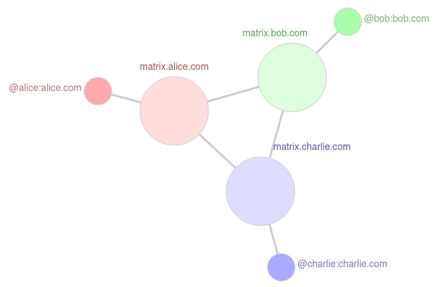

Handbok ägnad åt Carl
Pågrund av Carls bristande kunskaper inom teknologi har vi skrivit en enkel handbok för han (eller andra) att följa.
Nedanför finns guides på hur man installerar och konfigurerar
öppen källkodsprogramvara. Eftersom programvaran använder öppen källkod kan de optimeras för att använda otroligt lite ram. Detta är perfekt om man har en lika dålig dator som Carls. Vid behov av hjälp med denna handbok kan ni kontakta antingen @joakim:norrland.xyz eller @robin:norrland.xyz.
Bokindex:
- Matrix Guide
- Mumble Guide
Matrix guide
Matrix är en öppen standard som tillåter dig att skicka ände-till-ände krypterade meddelanden på ett decentraliserat sätt.
Matrix är i sig inget program. Istället måste man använda en klient som använder
sig utav matrixprotokollstandarden. Matrix liknar melj väldigt mycket eftersom du kan skicka meddelanden
till olika operatörer oavsett vilken hemserver du använder. Däremot är mejl inte skapat för det moderna internetet och har inte samma säkerhetstänkande.

Installera en Matrix klient
Matrix har väldigt många olika klienter man kan välja mellan.
För nybörjare som både dig och Carl så rekommenderar vi Element som en bra första klient.
Element finns både på Android, IOS, Mac, Windows, Linux och i webben.
Windows
För att ladda ner Element på Windows trycker du först på bifogad länk.
Efter att du har laddat ner Element.exe filen så dubbel klickar du på den.
Du kan även installera Element på Windows via "winget" vilket är Windows egna pakethanterare. Detta gör du genom att öppna konsolen (Superkey + R, skriv CMD och tryck enter) och skriv in detta kommand:
winget install -e --id Element.Element
Linux
Ska du installera Element på Linux kan du använda dig utav din specifika pakethanterare. Beroende på vilken Linux distribution din dator kör så har du olika pakethanterare.
Nedanför finns guider på hur du installerar Element på olika Linux distrubitioner.
Debian baserade distributioner: (Som t.ex Ubuntu, Pop_OS!)
sudo apt install -y wget apt-transport-https
sudo wget -O /usr/share/keyrings/element-io-archive-keyring.gpg https://packages.element.io/debian/element-io-archive-keyring.gpg
echo "deb [signed-by=/usr/share/keyrings/element-io-archive-keyring.gpg] https://packages.element.io/debian/ default main" | sudo tee /etc/apt/sources.list.d/element-io.list
sudo apt update
sudo apt install element-desktop
Arch baserade distributioner: (Som t.ex Manjaro, EndeavourOS)
sudo pacman -Syu
sudo pacman -S element-desktop
Fedora och CentOS system:
sudo dnf install -y dnf-plugins-core distribution-gpg-keys
sudo dnf copr enable taw/element
sudo dnf install -y element --refresh
Konfigurera Element
När Element öppnas kommer två alternativ upp. Det ena är att logga in och om du redan har ett konto kan du då
logga in igen. Det andra alternativet är att du skapar ett konto. När du ska skapa ett konto bör du använda en annan hemserver än matrix.org (standard). Detta är eftersom den kan vara överbelastad
men också för att man vill decentralisera nätverket mer. Det finns massor av olika hemservrar du kan välja mellan men
om du inte orkar kolla igenom listan så kan du direkt använda dig av: "matrix.norrland.xyz". Kom ihåg att ditt konto är kopplat till din hemserver.
Mumble guide
Mumble är ett öppet källkodsprogram som tillåter dig att prata med dina vänner i realtid. Mumble har låg latenstid, hög ljudkvalité
och enkrypterad kommunikation. Mumble går även att installera på de flesta operativsystem, det vill säga Windows, Mac, Linux och Android (mumla).
Installera Mumble
Eftersom Mumble har öppen källkod finns det några alternativa Mumble-klienter men allmänt så använder man sig av den officiella klienten vid namn "Mumble".
Windows
För att installera Mumble med Windows så behöver du först ladda ner programmet genom bifogad länk. Klicka på "Windows client" för att ladda ner
Mumble. När nerladdningen är klar är det bara att dubbelklicka på programmet. Efter att du dubbelklickat så bör programmet ha installerat.
Du kan även installera Mumble med Windows pakethanterare via:
winget install -e --id Mumble.Mumble
Linux
Ska du installera Mumble på Linux kan du använda dig utav din specifika pakethanterare. Beroende på vilken Linux distribution din dator kör så har du olika pakethanterare.
Nedanför finns guider på hur du installerar Mumble på olika Linux distrubitioner.
Debian baserade distributioner:
sudo apt-get update
sudo apt-get upgrade
apt-get install mumble
Vissa Ubuntu distributioner:
sudo apt-get update
sudo apt-get upgrade
sudo add-apt-repository ppa:mumble/release
sudo apt-get install mumble
Arch baserade distributioner: (Som t.ex Manjaro, EndeavourOS)
sudo pacman -Syu
sudo pacman -S mumble
Fedora och CentOS system:
sudo dnf install -y dnf-plugins-core distribution-gpg-keys
sudo dnf install mumble
Konfigurera Mumble
När du öppnar Mumble för första gången bör "Audio Wizard" rutan öppna. Gör den inte det kan du trycka på "Configure" längst upp. Vi rekommenderas starkt att du går igenom
alla steg i "Audio Wizard" för att få din ultimata ljudkvalité när du pratar med dina vänner. För att gå in i en server behöver du bara klicka på "connect" uppe i det vänstra hörnet.
Där kan du välja att lägga till en server. T.ex kan du lägga till norrland.xyz. Detta gör du genom att klicka "Add new...". I addressfältet skriver du sedan norrland.xyz.
Portnummret är 64738 (standard) och tillsist skriver du in ditt användarnamn.